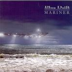

Home Artist links Label link

Blue Drift - Mariner
| Artist: | Blue Drift |
| Title: | Mariner |
| Label: | Buglefish Records CARP787 |
| Length(s): | 51 minutes |
| Year(s) of release: | 2005 |
| Month of review: | [11/2005] |
Line up
John Lodder - bass
Arch - drums, percussion
Dave Lodder - keys, guitars
Tracks
| 1) | Flight Of Doom | 4.18
|
| 2) | Nuclear Train | 7.14
|
| 3) | Deep Space | 8.18
|
| 4) | Digging For Chance | 7.04
|
| 5) | Half Light | 3.06
|
| 6) | The Mariner | 21.18
|
Summary
The music
Blue Drift is what might be considered a powertrio, although their sound does differ from that of the original powertrio. The guitars are quite dominant and rather melodic, the way we heard in the late eighties with guitar meisters. The synths can take on a pretty spacy sound when they move to the fore. The bass and drums are a bit less heavy than is normal with powertrios, but they roar away anyway. What strikes more is the lack of the sort of rhythmic complexity one would expect with a powertrio (why did I bring those up anyway?).
Deep Space strays by adding more synthy sounds, with some spoken word in the back. At times this leads the atmosphere in the direction of mid seventies Eloy, although the guitar solo-ing shoos this away. Half Light is a bit harder, moving more in a Holdsworth type of direction, and featuring a short drum solo too.
The Mariner opens with piano, slowly setting up for the rhythm and guitar pushing in. After this initial and slow build up we move into the sort of style we have heard on previous tracks. Dominant on guitar with synth moving forwards at times. Even though this track is much longer than others on the album, it does not really differ: the music keeps on moving from one theme and atmosphere, to another, without any perceived goal.
Conclusion
The sound of this instrumental album is quite friendly and melodic. Within a firm vein, anyway. What I miss, though, is a sense of direction in the tracks, they all seem to be moving on, without really getting anywhere. This creates an atmosphere of non-commitality (is there a decent noun to express this meaning?). Thus I can put this album safely aside, without considering it again. Those into somewhat radio friendly guitar music might like this, but it's not very interesting from a progressive point of view.
© Roberto Lambooy